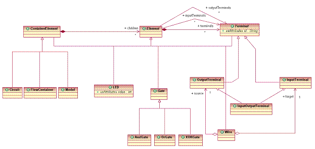

| Version: 0.1 | Date: December 28, 2005 |
The GMF Extensible Type Registry provides an extension point for plug-ins to add new element types to the registry. This extension point provides a way for GMF clients to define an application-specific classification system based on, but alternative to, the metaclasses defined by an Ecore metamodel. You can use this extension point when you wish to extend the metamodel and provide specialized model elements in your GMF application. You may also use this extension point to extend the editing behaviour of existing element types.
This tutorial will illustrate how to contribute element types and edit behaviour using the Extensible Type Registry.
To see the complete source code for the examples shown in this tutorial, install the Logic Example plug-in into your workspace.
Other references:
In this tutorial, we will use the Logic Diagram Example to illustrate how to create element types used by a graphical editor for the digital logic domain. To gain familiarity with the Logic Diagram Example, refer to the Logic Example Guide. The example provides other element types, but will also include the element types and menu items that we add in this tutorial
For reference, here is the ECore model for the Logic Diagram Example:

This tutorial will guide you through the specification of the metamodel type for the Circuit metaclass and show you how to create a specialization of the Circuit type that describes a Half Adder. You will learn how to add context menu items that allow you to create Circuit and a Half Adder elements using the edit behaviour that you have associated with these two element types.
We start with the extension declaration in the plugin.xml file, in which we indicate the EPackage for which we are contributing our metamodel type by referencing the logic example's namespace
URI:
<extension
point="org.eclipse.gmf.runtime.emf.type.core.elementTypes">
<metamodel
nsURI="http://www.ibm.com/xtools/1.5.0/logicsemantic">Next, we define a metamodel type for the Circuit metaclass in the digital logic ECore model. Inside of the <metamodel> element, we declare
the Circuit metamodel type with the following data:
EClassIEditHelper
for CircuitsIElementTypeFactory that is used to
instantiate the Circuit element typeLogicViewProvider to determine if it provides a view for
that kind of element.
<metamodelType
id="logic.circuit"
icon="icons/circuit16.gif"
name="%CircuitTool.Label"
eclass="Circuit"
edithelper="org.eclipse.gmf.examples.runtime.diagram.logic.internal.edithelpers.CircuitEditHelper"
kind="org.eclipse.gmf.runtime.emf.core.internal.util.IHintedType">
<param name="semanticHint" value="circuit"/>
</metamodelType>
The Circuit type name is localized in the plugin.properties file:
CircuitTool.Label = Circuit
Next, we implement the edit helper for the Circuit element type. The CircuitEditHelper
extends the edit helper for all ContainerElements, since the Circuit EClass extends the ContainerElement EClass. The ContainerElementEditHelper defines behaviour common to all ContainerElements. The CircuitEditHelper
extends this behaviour to configure a new Circuit with its eight terminals.
public class CircuitEditHelper extends ContainerElementEditHelper {
/**
* Gets a command to configure a circuit after it has been created.
*/
protected ICommand getConfigureCommand(final ConfigureRequest req) {
return new ConfigureLogicElementCommand(req,
SemanticPackage.eINSTANCE.getCircuit()) {
protected CommandResult doExecute(IProgressMonitor progressMonitor) {
Circuit oCircuit = (Circuit) req.getElementToConfigure();
createInputOutputTerminal(oCircuit, "A", progressMonitor); //$NON-NLS-1$
createInputOutputTerminal(oCircuit, "B", progressMonitor); //$NON-NLS-1$
createInputOutputTerminal(oCircuit, "C", progressMonitor); //$NON-NLS-1$
createInputOutputTerminal(oCircuit, "D", progressMonitor); //$NON-NLS-1$
createInputOutputTerminal(oCircuit, "1", progressMonitor); //$NON-NLS-1$
createInputOutputTerminal(oCircuit, "2", progressMonitor); //$NON-NLS-1$
createInputOutputTerminal(oCircuit, "3", progressMonitor); //$NON-NLS-1$
createInputOutputTerminal(oCircuit, "4", progressMonitor); //$NON-NLS-1$
return newOKCommandResult(oCircuit);
}
};
}
}Creating a specialization type is very similar; the main differences are that
The following specialization type defines a half adder circuit. The half adder is a digital logic circuit built from two logic gates that adds two one-bit binary numbers and produces two outputs: the sum and the carry. Add this into the same
<metamodel> element as the previous metamodel type:
<specializationType
id="logic.halfAdder"
icon="icons/halfadder16.gif"
name="%HalfAdderTool.Label"
edithelperadvice="org.eclipse.gmf.examples.runtime.diagram.logic.internal.edithelpers.HalfAdderAdvice"
kind="org.eclipse.gmf.runtime.emf.core.internal.util.IHintedType">
<specializes id="logic.circuit"/>
<param name="semanticHint" value="circuit"/>
</specializationType>
And, of course, the localized string for the name:
HalfAdderTool.Label: HalfAdder
The HalfAdderAdvice class is responsible for configuring a new circuit element to look like a half adder. The half adder has four terminals; two for the 1-bit binary numbers that it adds (A and B), one for the sum of the two bits (1), and one for the carry (2). Inputs A and B are directed through an XOR gate to produce the sum bit, at the same time also being directed through an AND gate to produce the carry bit.
Because the Circuit configuration provided by the CircuitEditHelper creates eight terminals and the half adder has only four terminals, it is easiest in this case configure our half adder by completely replacing the default configuration behaviour for Circuits. We replace the default configuration
behaviour by setting the REPLACE_DEFAULT_EDIT_COMMAND to TRUE.
public class HalfAdderAdvice extends AbstractEditHelperAdvice {
protected ICommand getBeforeConfigureCommand(final ConfigureRequest request) {
// The Half Adder advice completely replaces the default circuit
// configuration.
request.setParameter(IEditCommandRequest.REPLACE_DEFAULT_EDIT_COMMAND,
Boolean.TRUE);
return new ConfigureLogicElementCommand(request,
SemanticPackage.eINSTANCE.getCircuit()) {
protected CommandResult doExecute(IProgressMonitor progressMonitor) {
Circuit circuit = (Circuit) request.getElementToConfigure();
// Input two 1-bit binary numbers
InputOutputTerminal a = createInputOutputTerminal(
circuit, "A", progressMonitor); //$NON-NLS-1$
InputOutputTerminal b = createInputOutputTerminal(
circuit, "B", progressMonitor); //$NON-NLS-1$
// Sum of the the two bits
InputOutputTerminal s = createInputOutputTerminal(
circuit, "1", progressMonitor); //$NON-NLS-1$
// Carry
InputOutputTerminal c = createInputOutputTerminal(
circuit, "2", progressMonitor); //$NON-NLS-1$
// The half adder contains an XOR gate and an AND gate
Gate xorGate = createGate(circuit, LogicSemanticType.XORGATE, progressMonitor);
Gate andGate = createGate(circuit, LogicSemanticType.ANDGATE, progressMonitor);
// Inputs A and B are directed into the XOR gate
List xorInputs = xorGate.getInputTerminals();
createWire(a, (InputTerminal) xorInputs.get(0), progressMonitor);
createWire(b, (InputTerminal) xorInputs.get(1), progressMonitor);
// The same inputs A and B are also directed into the AND gate
List andInputs = andGate.getInputTerminals();
createWire(a, (InputTerminal) andInputs.get(0), progressMonitor);
createWire(b, (InputTerminal) andInputs.get(1), progressMonitor);
// The XOR gate produces the sum bit
List xorOutputs = xorGate.getOutputTerminals();
createWire((OutputTerminal) xorOutputs.get(0), s, progressMonitor);
// The AND gate produces the carry bit
List andOutputs = andGate.getOutputTerminals();
createWire((OutputTerminal) andOutputs.get(0), c, progressMonitor);
return newOKCommandResult(circuit);
}
};
}
}
To see these two new element types in action, we will create context menu items that will create Circuits and Half Adders. We contribute the context menu items to all IGraphicalEditParts that adapt to ContainerElement, using the Eclipse popupMenus extension point:
<extension
point="org.eclipse.ui.popupMenus">
<objectContribution
id="LogicContainerElementObjectContribution"
objectClass="org.eclipse.gmf.runtime.diagram.ui.editparts.IGraphicalEditPart">
<enablement>
<adapt type="org.eclipse.emf.ecore.EObject">
<instanceof value="ContainerElement"/>
</adapt>
</enablement>
<action
id="logic.circuit"
label="%CreateCircuit.ActionLabel"
icon="icons/circuit16.gif"
menubarPath="addGroup"
class="org.eclipse.gmf.examples.runtime.diagram.logic.internal.actions.CreateLogicElementActionDelegate"
enablesFor="1">
</action>
<action
id="logic.halfAdder"
label="%CreateHalfAdder.ActionLabel"
icon="icons/halfadder16.gif"
menubarPath="addGroup"
class="org.eclipse.gmf.examples.runtime.diagram.logic.internal.actions.CreateLogicElementActionDelegate"
enablesFor="1">
</action>
</viewerContribution>
</extension>
The ID of each action corresponds to the ID of the element type that the action will create. This way, we can use a single action delegate to create any kind of logic element.
Next, we implement the CreateLogicElementActionDelegate. It obtains a command to create a new logic element from the selected edit part:
public class CreateLogicElementActionDelegate extends AbstractActionDelegate
implements IObjectActionDelegate {
protected void doRun(IProgressMonitor progressMonitor) {
// Action ID corresponds to the ID of the element type to be created
String actionId = getAction().getId();
IElementType elementType = ElementTypeRegistry.getInstance().getType(actionId);
if (elementType == null) {
// Problem in the Action contribution XML
throw new IllegalArgumentException("Action id '" //$NON-NLS-1$
+ actionId
+ "' does not correspond to an existing element type ID."); //$NON-NLS-1$
}
// Get the selected edit part
IStructuredSelection structuredSelection = getStructuredSelection();
Object selection = structuredSelection.getFirstElement();
if (!(selection instanceof IGraphicalEditPart)) {
// Action enablement criteria expected to prevent this
throw new IllegalArgumentException("Selected element '" //$NON-NLS-1$
+ selection + "' is not an IGraphicalEditPart."); //$NON-NLS-1$
}
IGraphicalEditPart container = (IGraphicalEditPart) selection;
// Get the command to create the new element and its view
CreateViewRequest createRequest = CreateViewRequestFactory
.getCreateShapeRequest(elementType, container
.getDiagramPreferencesHint());
Command command = container.getCommand(createRequest);
if (command == null || !(command.canExecute())) {
// Action enablement criteria expected to prevent this
throw new IllegalArgumentException("Command for '" //$NON-NLS-1$
+ actionId + "' is not executable."); //$NON-NLS-1$
}
// Create the new element
DiagramCommandStack commandStack = container.getDiagramEditDomain()
.getDiagramCommandStack();
commandStack.execute(command);
}
}
To illustrate how to implement editing behaviour in using the GMF Extensible Type Registry, we